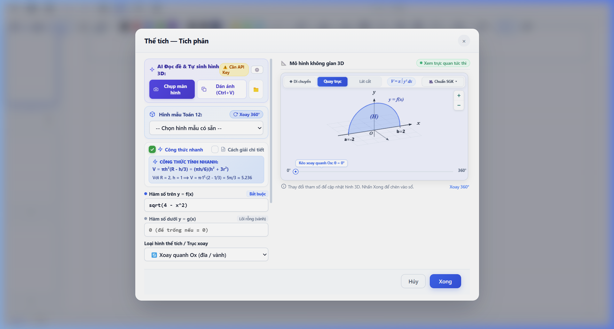
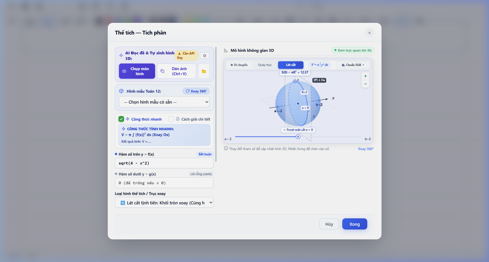
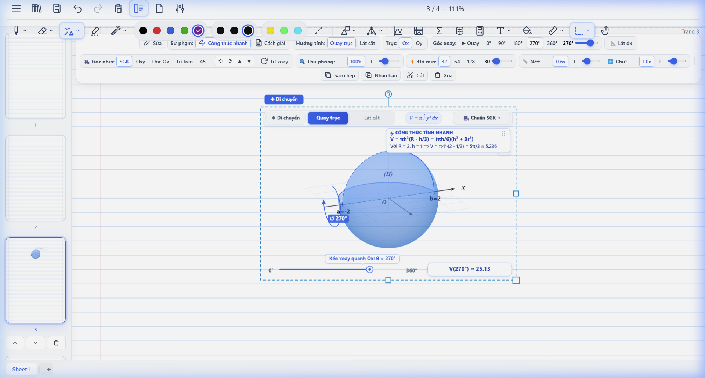

1 Bối Cảnh & Điểm Nghẽn Giáo Dục
Chương trình GDPT 2018 nhấn mạnh phát triển năng lực tư duy không gian và giải quyết vấn đề thực tiễn. Tuy nhiên, việc dạy và học Hình học Không gian & Tích phân Thể tích lớp 12 đang gặp thách thức lớn:
Rào cản tư duy trừu tượng: 72% học sinh gặp khó khăn khi hình dung khối 3D qua hình vẽ 2D phẳng trong SGK hoặc trên bảng đen phấn trắng.
- Mất nét trực quan: Khái niệm lát cắt vuông góc $S(x)$ và thể tích khối tròn xoay $V = \int_a^b S(x)dx$ rất khó mô phỏng bằng công cụ tĩnh.
- Gánh nặng giáo viên: Vẽ tay hình 3D trên bảng rất tốn thời gian (5–10 phút/hình), khó bảo đảm góc nhìn chính xác và biểu diễn nét đứt/liền.
- Công cụ hiện hành rời rạc: Các phần mềm như GeoGebra đòi hỏi gõ lệnh toán học phức tạp, không tự động nhận diện từ ảnh chụp hay chữ viết tay.
2 Kiến Trúc Công Nghệ Đa Tầng
Sản phẩm kết hợp giữa mô hình ngôn ngữ thị giác lớn và động cơ đồ họa không gian thời gian thực:
1. Input Đa Thức (Multimodal Input)
Ảnh chụp đề SGK, bài thi viết tay hoặc văn bản LaTeX mô tả bài toán.
2. Trích Xuất & Suy Luận (Gemini Vision)
Phân tích đề bài, trích xuất tọa độ đỉnh, bán kính, chiều cao, phương trình lát cắt dạng JSON chuẩn hóa.
3. Thuật Toán Nét Khuất (Geometry Engine)
Tính toán vector pháp tuyến camera để tự động chuyển nét đứt (dashed) & nét liền (solid) chính xác 100%.
4. Dựng Hình WebGL/Three.js
Dựng mô hình 3D tương tác mượt mà trên Canvas sổ tay hoặc Modal 3D Lab chuyên sâu.
3 Chuẩn Hóa Sư Phạm Toán
- Quy ước nét chuẩn SGK: Tự động tính toán đường sinh khuất khi xoay vật thể, không gây nhầm lẫn thị giác cho học sinh.
- Không phóng đại đột ngột: Thuật toán xoay bằng chuột tối ưu hóa góc quay quanh tâm vật thể (Arcball), giữ nguyên tỉ lệ vật thể ổn định.
- Hoạt động Web-first: Không cần cài đặt phần mềm, chạy tức thì trên Google Chrome, Cốc Cốc, Safari, iPad và Smart Board.

4 Tính Năng Đột Phá Hỗ Trợ Dạy Học
1. Trực quan hóa Lát cắt Tịnh tiến (Cross-section Slicing):
Cho phép thanh trượt tịnh tiến mặt phẳng cắt vuông góc với trục $Ox$. Học sinh nhìn thấy trực tiếp thiết diện biến thiên $S(x)$ (hình tròn, elip, tam giác đều) tương ứng với từng lát cắt, biến công thức vi tích phân trừu tượng thành trải nghiệm trực giác sống động.
2. Mô hình hóa bám dính trang vở (In-notebook Canvas):
Khối 3D hiển thị tương tác trực tiếp ngay trong trang ghi chép của học sinh và bài giảng điện tử của giáo viên, kết nối liền mạch giữa lý thuyết viết tay và thực hành không gian.


5 Tác Động & Đánh Giá Thực Nghiệm
Thử nghiệm ứng dụng trên 3 lớp học 12 (120 học sinh) và khảo sát 15 giáo viên Toán THPT cho thấy kết quả vượt trội:
Đánh giá của giáo viên: "Lát cắt tịnh tiến giải quyết hoàn toàn điểm nghẽn khó dạy nhất của tích phân thể tích lớp 12. Học sinh thấy ngay hình dạng thiết diện thay vì phải tưởng tượng trừu tượng."
6 So Sánh Đột Phá Với Công Cụ Cũ
| Tiêu chí so sánh | Phương pháp cũ | NoteRenderer AI |
|---|---|---|
| Nhập liệu đề bài | Gõ mã lệnh / tọa độ phức tạp | Chụp ảnh / OCR AI tự động |
| Trực quan lát cắt $S(x)$ | Tĩnh hoặc khó thiết lập | Tịnh tiến mượt mà thời gian thực |
| Nét đứt/nét liền | Cố định theo góc vẽ ban đầu | Tự động đổi nét theo góc nhìn 3D |
| Môi trường học tập | Mở cửa sổ phần mềm riêng | Tích hợp ngay trong sổ tay học |
7 Khả Năng Nhân Rộng & Tương Lai
- Triển khai diện rộng chi phí 0đ: Chạy hoàn toàn trên nền tảng Web tiêu chuẩn, tương thích cả máy cấu hình phổ thông của trường học công lập.
- Mở rộng môn học STEM: Mở rộng sang Vật lý 3D (quỹ đạo hạt, điện từ trường) và Hóa học 3D (cấu trúc không gian phân tử hữu cơ).
- Bảo vệ dữ liệu & an toàn: Không lưu trữ dữ liệu riêng tư của học sinh, tuân thủ tiêu chuẩn an toàn AI trong giáo dục.